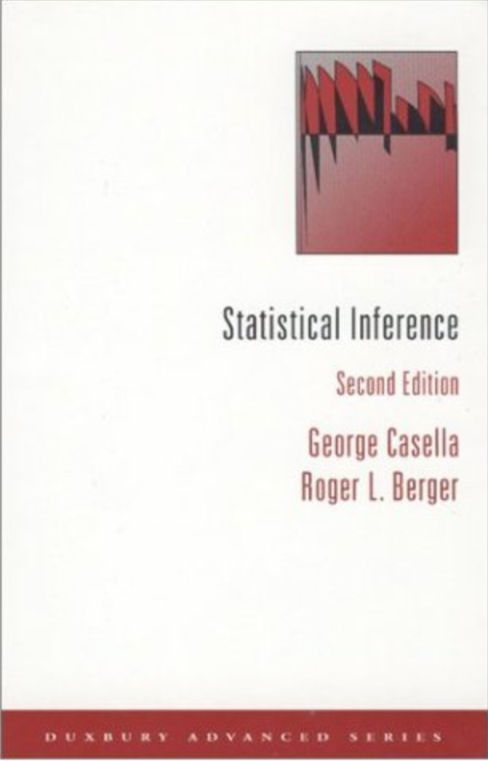
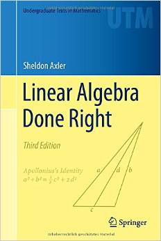
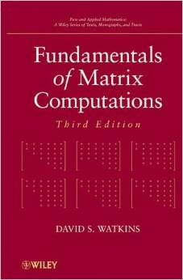
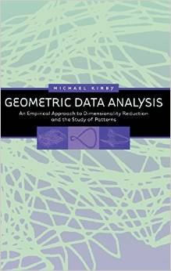
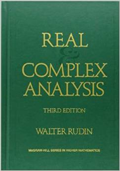

Books – Mathematics
Statistics
|  | Statistical Inference (2nd Edition) |
 |
Introduction to Probability Models (11th Edition) |
All of Statistics: A Concise Course in Statistical Inference |
Matrix
Introduction to Linear Algebra (4th Edition) |
|  | Linear Algebra Done Right (3rd Edition) |
Matrix Computations |
|  | Fundamentals of Matrix Computations (3rd Edition) |
|  | Geometric Data Analysis: An Empirical Approach to Dimensionality Reduction and the Study of Patterns |
Nonnegative Matrix and Tensor Factorizations: Applications to Exploratory Multi-way Data Analysis and Blind Source Separation |
Analysis
Principles of Mathematical Analysis (3rd Edition) |
|  | Real and Complex Analysis (3rd Edition) |
Topology (2nd Edition) |
Analysis On Manifolds |